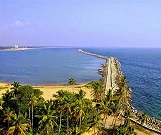
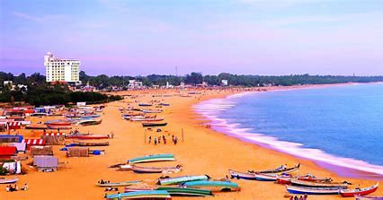

Kollam (erstwhile Quilon) is a southern district of Kerala, located 70 km north of the state’s capital Thiruvananthapuram. It is flanked by the Arabian sea on the west, Tamil Nadu on the east, Alapuzha and Pathanamthitta districts on the north and Thiruvananthapuram district on the south. Housing a population of over 2.6 million, Kollam is one of the more densely peopled districts of India. The head quarters of the district administration is centred at Kollam City, the district’s capital. Administratively, the district is composed of two revenue divisions viz. Kollam and Punalur with three taluks each under them.
 